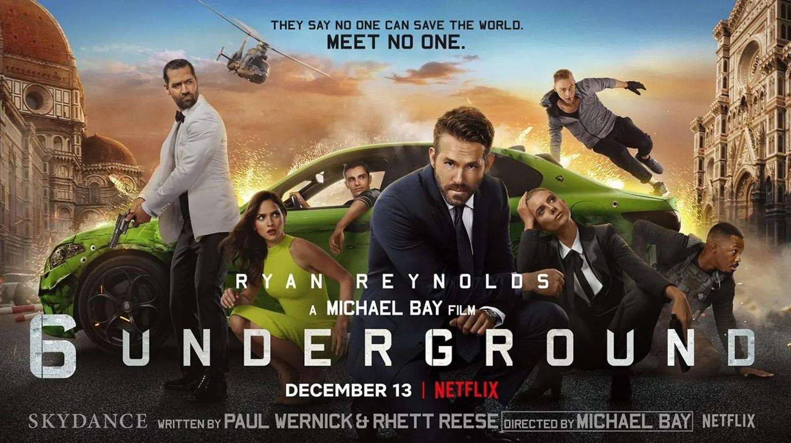
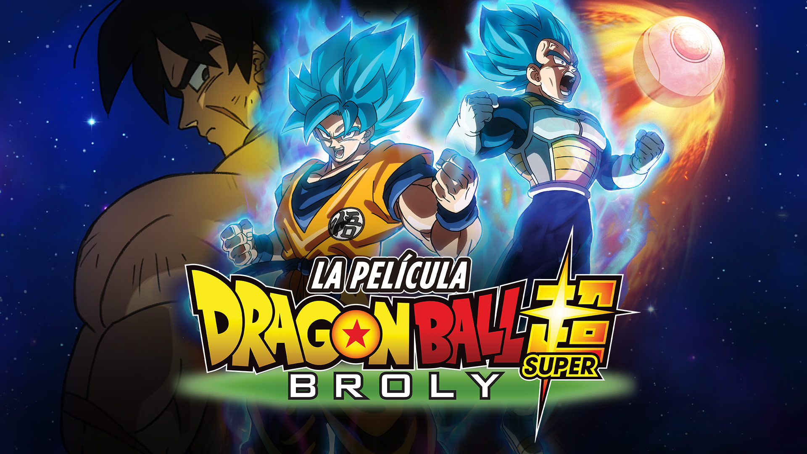
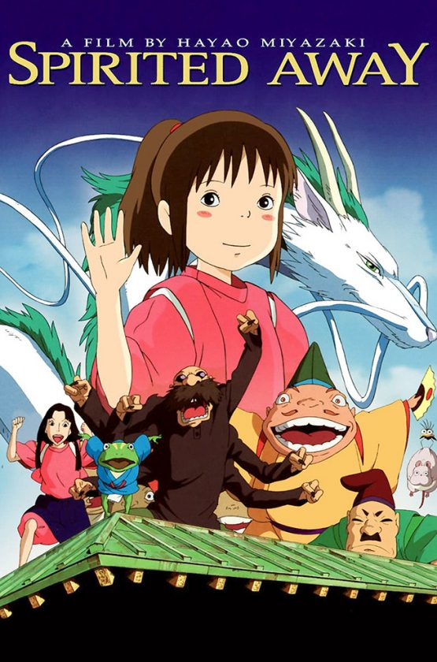

Best movie action-comedy, an absolutely masterpiece, I almost love everething of it.
Really surprising movie from Akira Toriyama and Toei, I think the best way to make canon Broly in the Dragon Ball universe, and not only that; the first appearance for Gogeta, very cool soundtrack and visual effects. LOVE IT!
Super beatiful film. Really artistic. I love how Hayao Miyazaki captured every feeling.
